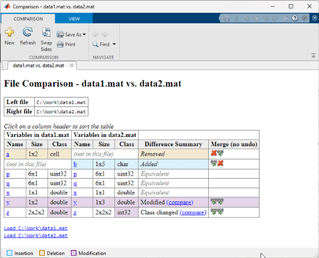
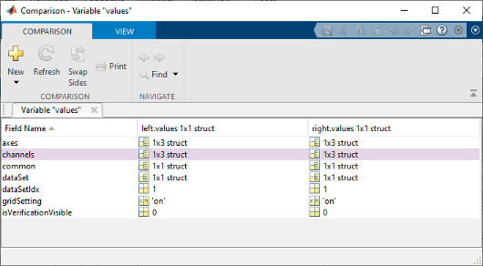

Compare and Merge MAT-files
You can use the Comparison Tool to compare two MAT-files. Compare two MAT-files to:
Determine which variables are common to both files and which appear in only one file.
Identify differences between individual variables. For example, you can determine which fields of a structure are different or which elements of an array differ.
You can select MAT-files on disk to compare using one of these methods:
Files or Project panel — To compare two MAT-files on disk, select both files. Then, right-click and select Compare Selected Files/Folders. The Comparison Tool opens the file you select first on the left.
Command Window — Use the
visdifffunction.
Explore Differences
When you perform a MAT-file comparison, a new window opens and displays the two
files side by side. For example, suppose that you have two MAT-files,
data1.mat and data2.mat. When you compare
the two files, the Comparison Tool displays the resulting report.

The Comparison Tool highlights changes in variables. If the variables in both files are equivalent but the files are not identical, the Comparison Tool displays a message. Possible causes of the differences between the files include file formats, file timestamps, the order in which the variables are stored, or variables that contain ignored differences. The Comparison Tool uses these colors to highlight differences.
| Highlighting | Description |
|---|---|
| Purple | Values of the variable differ between the two files. Click the compare link to investigate. |
| Blue | The variable only exists in the right file. |
| Yellow | The variable only exists in the left file. |
| None | The variables in both files are equivalent. The tool ignores
differences in NaN patterns, field ordering in
structs, and the difference between negative zero or positive
zero. |
| Purple (only in Class columns) | The variable data class changed. Click the compare link to investigate. |
You can further explore the results in the report using several methods:
Sort results — To sort the results by name, size, class, or difference summary, click the corresponding column header. For example, click the Class column header to sort by class type.
Load variable — To load the contents of a variable into the Variable Editor, click the name of that variable.
Load MAT-file — To load one of the MAT-files into the workspace, click the corresponding Load link at the bottom of the report.
Save HTML report — To save a copy of the report as an HTML file, go to the Comparison tab and click Save As > HTML.
For information about how to further configure the comparison report, see Compare Files and Folders and Merge Files.
Compare Variables
To investigate differences between instances of a variable in both files, click the compare link in the Difference Summary column of the comparison report table. The Comparison Tool displays a report for the specified variable. To further investigate differences in individual array elements or fields of a structure, double-click a highlighted row.

Merge Changes
When comparing MAT-files, you can merge changes from one file to the other. There are no undo capabilities when merging MAT-files, so merge with caution.
To copy modified variables from one file to the other, on the Comparison tab, in the Merge section, click either the Copy the right variable to the left file or the Copy the left variable to the right file button, as applicable.
Limitations
In MATLAB® Online™, the Comparison Tool does not support variable comparison.